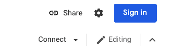
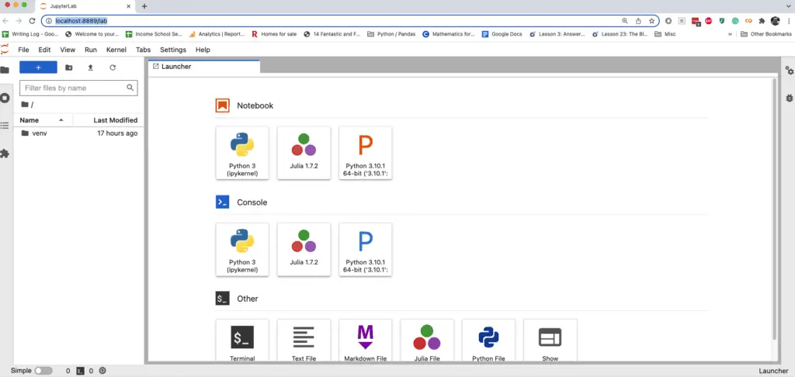
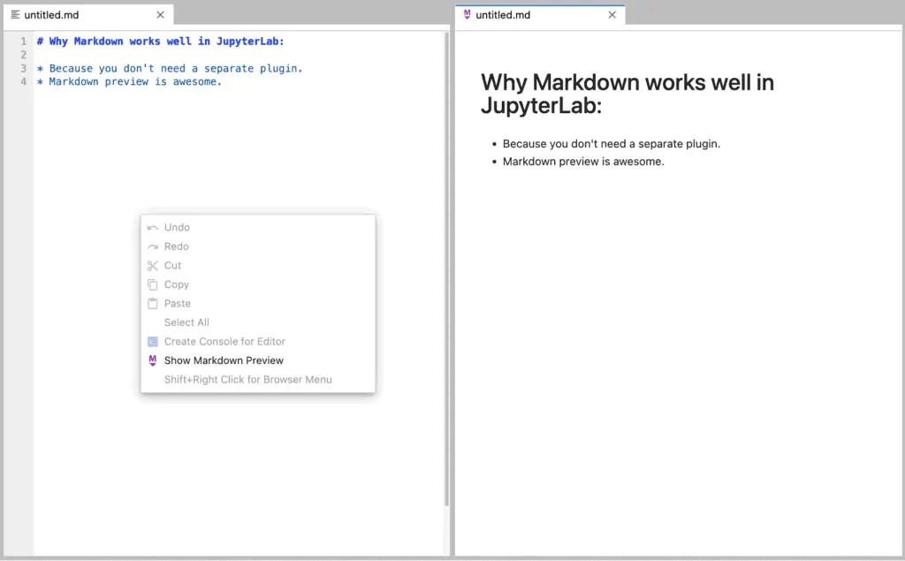
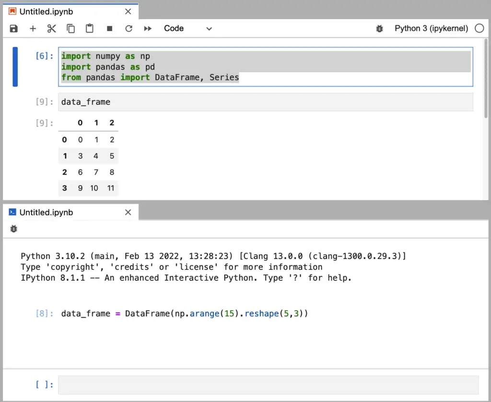

Jupyter Notebook: A Complete Introduction
Jupyter Notebook is a popular development environment that supports Python and other programming languages. It is a browser-based environment, which is excellent since you can connect to notebooks running either online or locally.
Our goal in this article is two-fold and reflects the article’s division into two parts:
In Part One, we want to get you started in Jupyter Notebook using the latest evolution of the tool, JupyterLab. JupyterLab runs traditional “notebooks”, but it also serves as a kind of lightweight, browser-based IDE where you can edit files, preview markdown documents, run Python programs, and open an IPython terminal – all within one integrated web interface. If you’re just looking to “get your hands dirty” with the tool, Part One is for you.
In Part Two, we want to answer several frequently asked questions that beginners have about Jupyter Notebook. If you’re the type of person who likes to dig into all the facts before jumping into new things, you may want to skip the tutorial and read this part first. Part Two will include much of the background material you’d need to make a decision as to whether Jupyter Notebook or JupyterLab is right for your needs.
Part One: Up and Running
Running Online With Colab
To give you a feel for running Jupyter Notebook, we’ve prepared a starter notebook for you that you can run online. You may want to open it in a new browser tab to switch back to this article. To do this, use CTRL+T on Windows or Linux or CMD-T on a Mac. Here is the online notebook.
If you look at the URL for the article, you’ll see it’s hosted on Google Colab – perhaps the most popular site for hosting Jupyter Notebooks online.
Jupyter Notebook files are a set of editable rows called “cells.” Cells have two basic types – markdown cells containing text in markdown format and code cells that contain code. In addition, non-editable cells below the code cells will show the result of running the cell. To edit the cell as the notebook asks you to do, in Colab, you’ll need to “connect” the notebook to a running Python kernel. Click the connect button in the upper-righthand corner.

Clicking connect will prompt you to log in using your Gmail account. At this point, you can follow along with the notebook and edit the Python code in the code cell and run it. You likely will see a warning to the effect that Google is not the author of the notebook, but as you can see, the code is relatively straightforward.
Jupyter Notebook supports many keyboard shortcuts, and you can find links to many cheat sheets online. In addition to Shift-ENTER to run the cell. I’ll satisfy myself here by just listing four of my favorites. For each of these, type escape first and the indicated letter, don’t key them simultaneously.
ESC + B create a new cell BELOW the current cell.
ESC + A create a new cell ABOVE the current cell.
ESC + C Change the current cell type to CODE.
ESC + M Change the curent cell type to MARKDOWN.
I love Colab because it allows my readers to interactively run the coding exercises I publish from time to time. For example, all of the Jupyter Notebook pages on the companion site to this one, CodeSolid.github.io, contain a link (look for the rocketship on top) to a live Colab version of the notebook.
Colab is a great place to share work with others, but until your notebooks are ready for that, you’ll probably want to run Juptyer locally. Moreover, running Jupyter locally will give you access to a more complete Jupyter Lab environment, which offers many more features.
Running Jupyter Lab Locally
If you have a version of Python 3.4 or greater, you already have what you need to run JupyterLab. You just need to do a quick bit of setup at a command (terminal) prompt. We’ll cover that next. While installing JupyterLab, we’ll also install Seaborn, which will get us Pandas, NumPy, and Matplotlib. (If you just want to run JupyterLab, you can leave that off). The instructions are very similar for Mac, Linux, and Windows, except for one line (which we’ll point out below). Ready? Open a command prompt and enter:
mkdir jupyter
cd jupyter
python3 -m venv venv
# On Mac/Linux:
source venv/bin/activate
# On Windows:
venv/Scripts/activate.bat
pip install JupyterLab Seaborn
# Running Jupyter Lab:
jupyter lab
When JupyterLab starts up, it will launch the JupyterLab server and open your default browser to a launcher page. It will also print the URL you can return to if you happen to close your browser, as shown here:
To access the server, open this file in a browser:
file:///Users/username/Library/Jupyter/runtime/jpserver-37474-open.html
Or copy and paste one of these URLs:
http://localhost:8889/lab?token=4a63802ed46f749388b6069b5eea48bd7f4bb09288a9c2eb
or http://127.0.0.1:8889/lab?token=4a63802ed46f749388b6069b5eea48bd7f4bb09288a9c2eb
Unlike Jupyter Notebook, which allows opening up notebook files only, the launcher window enables you to launch a notebook like the one we saw in Colab, a Python Console, terminal windows, and various types of files.
Here’s how it looks for me. Note that you probably won’t see the Julia selections available on your machine if you followed the steps above unless at some point you also set up Julia for Jupyter Notebook, as I did recently.

If you later close the launcher, you can still launch these items by selecting “File / New” from the menu. Unlike Jupyter Notebook, then, JupyterLab is much more flexible, and supports a wide variety of file types. It’s not as full featured an editor as something like Visual Studio Code, but it’s appropriate for quick editing jobs that need to be done while working on a notebook.
JupyterLab supports tiled windows. One place where this shines is when editing Markdown files, and using Markdown Preview. Right-click on the Markdown file to show a preview pane.

Another excellent feature of Jupyter lab that you can take advantage of is one that users of the Spyder IDE are used to – being able to have more than one screen element sharing the same Python kernel. You can, for example, open a notebook then open a Python terminal that shares the same kernel as the notebook.
To do this, right-click on the notebook and select “New Console for Notebook.” This will open up a new kernel sharing the same variable space as the notebook. In the screenshot below, for example, I followed these steps:
I added the imports in the first cell
I used “New Console for Notebook” to open the console at the bottom.
In the console, I defined a data_frame.
Back in the notebook, I used the data_frame.

Of course, that precise sequence isn’t something you’d do outside of a demo – I did it to show that you can go back and forth between the console and the notebook. But one practical real-world application of this would be to run quick experiments in the console to evaluate or explore data in the notebook while keeping the notebook itself in a more pristine state.
One feature of JupyterLab that I admit I haven’t had much success with are the extensions. The “puzzle-piece” icon on the left brings up the interface to manage JupyterLab extensions. Of the extensions I’ve explored, many of these require additional, manual configuration, and some are incompatible with my current JupyterLab version. Perhaps in the future I’ll have more to say about these after spending more time on them. In the meantime, the takeaway is that they don’t generally install and work as seamlessly as, for example, PyCharm plugins or VS Code extensions.
As a final note, installing JupyterLab also enables running traditional Jupyter Notebook in the traditional way. To see how this works, simply replace the command jupyter lab in the instructions above with jupyter notebook.
In my own work, JupyterLab offers so many new features that I rarely run the “traditional” Jupyter Notebook server, but some people do prefer the more minimalistic interface.
Part Two: Jupyter Notebook Questions and Answers
In this section, we wanted to address some questions that folks who are unfamiliar with Juptyer will sometimes ask. Some of these are beginner questions, so if you’re not a beginner, bear with us if the answers seem obvious to you.
Who Uses Jupyter Notebook?
Jupyter Notebook and Jupyter Lab are favorites of the Data Science and Machine Learning Community, where the ability to deal with data graphically, to explore tabular data such as Pandas DataFrames, and to publish reproducible results for colleagues, makes Jupyter a natural for this community.
Because it supports publishing coding lessons and even whole books, Jupyter is also a favorite among educators. One popular Jupyter hosting site, CoCalc, specializes in working with educators who are using Jupyter not only to teach data science and machine learning but also various courses in mathematics (using SageMath an open-source alternative to pricey symbolic mathematics tools like Matlab).
What are the Disadvanatages of Jupyter Notebooks
Although Jupyter Notebook and JupyterLab are popular with the data science community, these tools are used far less extensively by the software development community, which is where I have my roots. There the tool of choice for Python is often PyCharm, though a few folks swear by Visual Studio Code.
My professional version of PyCharm has many features that make it better as a general development tool for Python. The debugger works well on local and remote processes, as well as in processes running in Docker or Docker Compose. It also enables me to work with many other file types and provides outstanding code navigation features. That makes it an ideal tool for working with Terraform files, for example. These are features that would make Jupyter Notebook a very poor choice indeed.
Another criticism leveled at Jupyter Notebook from time to time is the fact that it’s browser-based makes it slow, but I have not had much trouble on that score. Of course, if it’s run remotely, then it’s subject to more latency than if run locally, but I’ll wager that none of my readers run 300-baud modems at this stage (unless maybe for fun).
What Languages Does Jupyter Support?
As a Python project, Jupyter of course supports Python without further configuration. However, the Jupyter project also supports a support a huge array of other languages through community maintained kernels. In fact, Jupyter was designed to support multiple languages from the beginning. The name is actually a sort of anagram or mnemonic based on the the combination of “Ju” (from Julia), “Pyt” (from Python), and “R” (from R, of course). Gordon Ball has provided a very helpful list of active Jupyter Kernels, so that should give you an idea of what’s available. Running C++ in a Jupyter Notebook? You always knew you wanted to. Now you can.
Is Jupyter Notebook the Same As Anaconda?
Jupyter Notebook is not the same as Anaconda, but the two tools are related. Anaconda is a heavyweight Python distribution that includes the Conda tool (also available in a more lightweight distribution called Miniconda), as well as full suite of data science tools including Jupyter Notebook.
Is Jupyter Notebook an IDE?
Strictly speaking, JupyterLab is an Integrated Development Environment, or IDE. It supports consoles, file editing, running code, debugging, etc. However, because the core use case for Jupyter is to run notebooks, it’s more correct to label it a specialized data science / publishing tool.
In Python, there’s broad agreement that PyCharm is an IDE, as is Spyder. VS Code can also be made to serve, but it straddles the fence between an IDE and a general editor.
What is the Difference Between PyCharm and Jupyter?
PyCharm and Jupyter differ in that PyCharm is more of a general software development IDE as opposed to a data science/educational/publishing tool. Also, PyCharm is a commercial tool owned by JetBrains (though there is a free community edition available), whereas Jupyter is open source.
Conclusion
If you’re doing Data Science or Machine Learning, JupyterLab or Jupyter Notebook are essential tools to know. But you may also find them useful if that’s not your primary role. Also, as we’ve discussed, support for editing and displaying mathematical formulas and Latex files, for example, make the Jupyter project the foundation for such general analytic math tools as SageMath.
In my own case, although my background is in software development, and I use PyCharm in my “day job”, as I work on this blog, I am more and more fond of using Jupyter Notebook in my work. This is partly because I can publish runnable sets of coding exercises and solution sets – and these have been my most popular articles to date. (Everybody loves a puzzle).
Even when not publishing the notebook, however, Jupyter fully supports the kind of interactive, experimental coding that one does when teaching coding skills or blogging about coding. Python’s versatility means it supports large-scale coding efforts done in an IDE as well as interactive experiments published in a notebook. So Jupyter Lab may well be worth a look even if you rarely leave PyCharm.